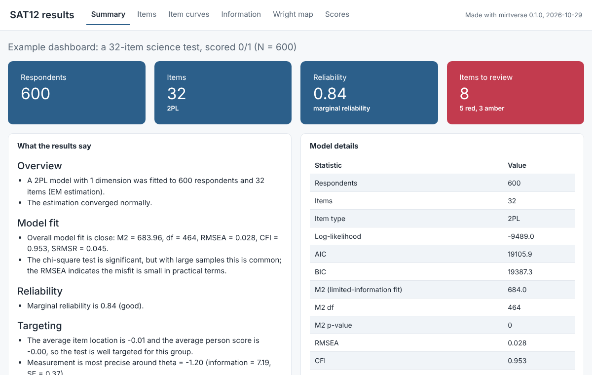
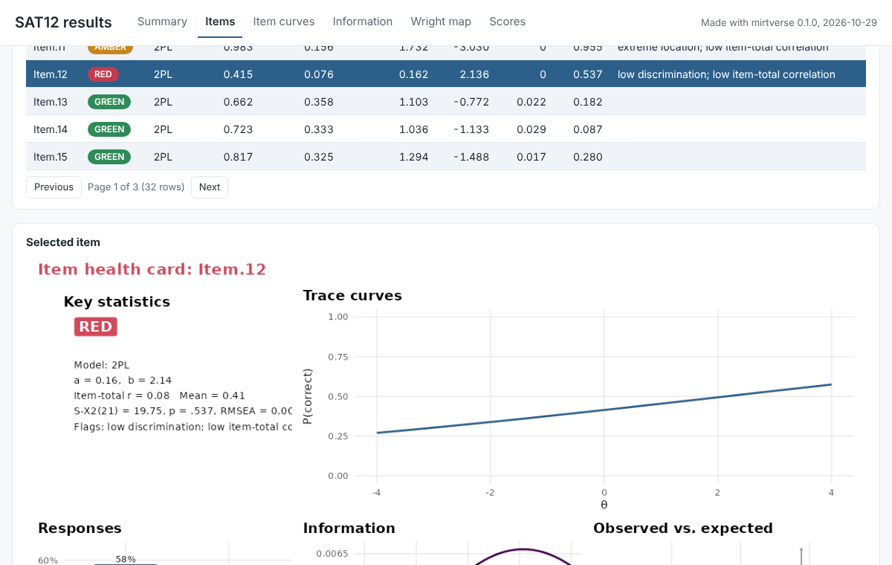
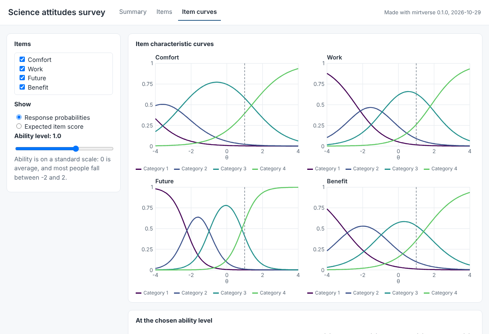

Most people who need IRT results never open R: teachers who want to know which questions worked, a client who commissioned a survey, a committee reviewing a test form, or students in a measurement course. A results dashboard gives them the findings in a form they can explore on their own.
mirtverse has three ways to look at an analysis, each for a different reader:
| Tool | What it is for | Who uses it |
|---|---|---|
Workbench
(launch_workbench()) |
Doing an analysis: load data, fit and compare models, score people | You, the analyst |
Report (mv_report()) |
A complete, static record of the analysis | Reviewers, appendices, archives |
Dashboard (mv_dashboard()) |
Exploring finished results: click items, move a slider, look someone up | People who do not use R |
Open a live example dashboard. It is a single HTML file built from the code below, so it runs in your browser with nothing installed.
Build a dashboard in one line
Fit a model as usual and pass it to mv_dashboard():
library(mirtverse)
data <- key2binary(SAT12, key = c(1,4,5,2,3,1,2,1,3,1,2,4,2,1,5,3,4,4,1,4,3,3,
4,1,3,5,1,3,1,5,4,5))
mod <- mirt(data, 1, verbose = FALSE)
mv_dashboard(mod, title = "SAT12 results",
subtitle = "A 32-item science test, scored 0/1 (N = 600)")The dashboard opens in your browser. The model can be any
unidimensional mirt() model, or the result of
select_model(), in which case the recommended model is
shown. Assign the result (app <- mv_dashboard(...)) to
keep it without opening it.

The summary panel puts the numbers people ask for first at the top:
respondents, items, reliability and how many items need review. The text
below them is the same plain-language summary you get from
interpret(), so a reader does not need to know what an M2
statistic is to understand the results.
The panels
Choose the panels you need with panels, in the order you
want them:
| Panel | What it shows |
|---|---|
"summary" |
Respondents, items, reliability and items to review, with the plain-language interpretation and model details |
"items" |
The item table with a traffic-light status; select a row to see that item’s health card |
"curves" |
Trace curves for chosen items, with an ability slider that reads off the response probabilities |
"information" |
Test information and standard error, and item information curves |
"wright" |
The Wright map of people and items on one scale |
"scores" |
The distribution of ability estimates and the sum-score conversion table |
"persons" |
A searchable table of each person’s score, standard error and percentile (off by default) |
"dif" |
Differential item functioning results from dif()
|
"rt" |
Response-time results from fit_rt()
|
By default you get summary, items, curves, information, Wright map and scores, plus DIF and response times when you pass those results in.
The items panel is usually the one item writers spend most time on. They can sort and search the table, and selecting an item shows its item health card, with the trace curve, the response distribution, information and observed against expected scores:

The curves panel makes the model concrete. Readers tick the items they want and move the slider to an ability level. A dashed line marks that level on every curve, and a table lists the expected score and the probability of each response category there:

The curves, information, Wright map, scores and persons panels need a unidimensional model; for other models they are left out with a message.
Add your own title, logo, DIF and response times
res <- dif(data, group = gender)
mv_dashboard(mod,
panels = c("summary", "items", "curves", "dif"),
dif = res,
title = "Grade 8 science: fairness review",
subtitle = "Spring 2026 field test",
logo = "school-logo.png")The logo can be a PNG, JPEG or SVG file. The DIF panel shows the
plain-language DIF summary, the test table, the effect sizes and the
item curves by group for flagged items. The response-time panel
(rt = fit_rt(...)) shows the interpretation, item
parameters and rapid-guessing plots.
Share it
export_dashboard() saves a dashboard in one of two
forms. Pass it the model and the same arguments you gave
mv_dashboard(), or the app itself.
As one HTML file (no server needed)
export_dashboard(mod, "sat12-dashboard.html", format = "html",
title = "SAT12 results")This writes one self-contained file. It needs no server, no R and no internet connection, so you can email it, put it on a shared drive, a course page or a learning management system, and anyone can open it in a browser. The tabs, item table, item health cards, item curves with the slider, item information and person lookup all still work; the other plots are pictures. With item health cards for a long test the file can run to a few megabytes.
This is the easiest option for most people, and it is what the live example on this site is.
As a Shiny app
export_dashboard(mod, "sat12-dashboard", title = "SAT12 results")
shiny::runApp("sat12-dashboard") # try it locally
rsconnect::deployApp("sat12-dashboard") # publish to shinyapps.io or Posit ConnectThis writes a folder with app.R and
dashboard.rds, ready to publish to shinyapps.io or Posit Connect. A
hosted app suits an organization that already runs a Shiny server, or a
dashboard you want to update in place at a fixed address. The server
installs mirtverse the same way you installed it, so install it from
r-universe or GitHub, not from a local copy, before you deploy.
| HTML file | Shiny app | |
|---|---|---|
| Needs a server | No | Yes (shinyapps.io, Posit Connect, Shiny Server) |
| Works offline | Yes | No |
| Share by | Email, shared drive, course page | A web address |
| Interactive | Tables, item cards, curves and slider, item information, person lookup | Everything |
What a dashboard contains, and privacy
Everything a dashboard shows is computed once, when you build it. The app never refits or rescores anything, so it opens quickly, and the saved dashboard holds only summaries: item statistics and parameters, curves, the binned score distribution and pictures of the item cards. It never contains the item responses, in either format.
Individual scores are included only when you add the
"persons" panel, and export_dashboard() then
reminds you to check that you may share them. Use ids to
show your own identifiers instead of row numbers:
mv_dashboard(mod, panels = c("summary", "scores", "persons"), ids = students$id)Leave the persons panel out of anything you post publicly: the scores panel already shows the score distribution and the sum-score conversion table without identifying anyone.
Tips
-
Keep it short. Three or four panels are easier to
read than nine. For an item review meeting,
c("summary", "items", "curves")is often enough. - Write a subtitle. Say what the test is, who took it and when; the reader of a dashboard has not seen your data.
-
Long tests. Item health cards are drawn for tests
of up to 40 items. Use
cards = TRUEto draw them for longer tests (it takes a little longer and makes HTML files larger) orcards = FALSEto skip them; without cards, selecting an item shows its trace curve instead. -
Scores.
methodsets the scoring method ("EAP"by default) for the scores and persons panels.